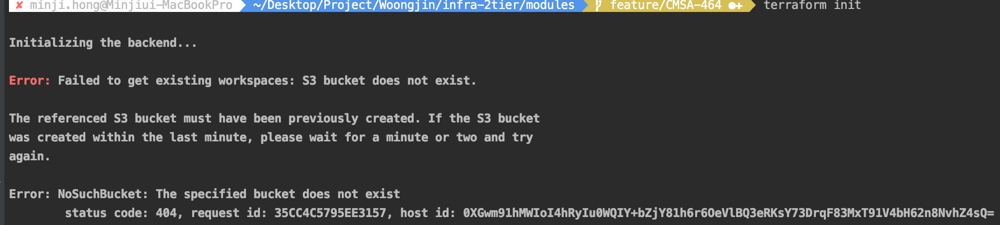

infra-2tier-services 시작
Infra 2tier Architecture - services를 Terraform으로 구현한 프로젝트입니다.
프로젝트 빌드 및 실행은 다음과 같은 순서로 이루어집니다.
1. IAM 계정 생성 및 AWS CLI 를 통한 로컬 환경 구성
1.1 aws iam account 생성 (aws console)
AWS 관리 콘솔에서 프로그래밍 방식 로그인 계정 생성 및 AdministratorRole 부여
1.2 awscli install
cmd $ brew install awscli
1.3 AWS local 환경 설정
cmd $ aws configure
AWS Access Key ID [****************KCPQ]:
AWS Secret Access Key [****************OSRk]:
Default region name [ap-northeast-2]:
Default output format [None]:
2. terraform 설치 및 적용
2.1 terraform 설치
cmd $ brew install terraform
2.2 terraform 프로젝트 구성 (git clone)
cmd $ cd ~
cmd $ mkdir workspace
cmd $ cd workspace
/* git clone */
cmd $ git clone https://github.com/pe-woongjin/infra-2tier-services.git
cmd $ cd ~/workspace/infra-2tier-services
2.3 인프라 구축
/* 개발 환경 기준 */
cmd $ cd ~/workspace/infra-2tier-services/development
/* terraform */
cmd $ terraform init
cmd $ terraform plan
cmd $ terraform apply
※ tf-repository가 먼저 구현되지 않았을 때 오류 
tf-repository는 https://github.com/pe-woongjin/infra-2tier-base.git 프로젝트에서 우선적으로 구축합니다.
해당 오류가 발생했다는 것은, s3 & dynamodb가 존재하지 않음을 의미합니다.
때문에, 아래의 방식으로 infra-2tier-base 인프라를 먼저 구축한 후, infra-2tier-services 인프라를 구축해주시기 바랍니다.
/* 저장소 구축 */
cmd $ cd ~/workspace/infra-2tier-base/tf-repository
/* terraform */
cmd $ terraform init
cmd $ terraform plan
cmd $ terraform apply